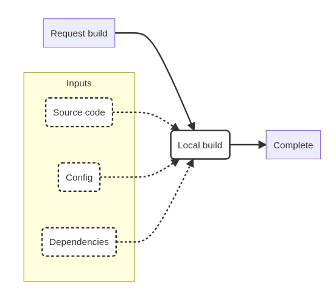
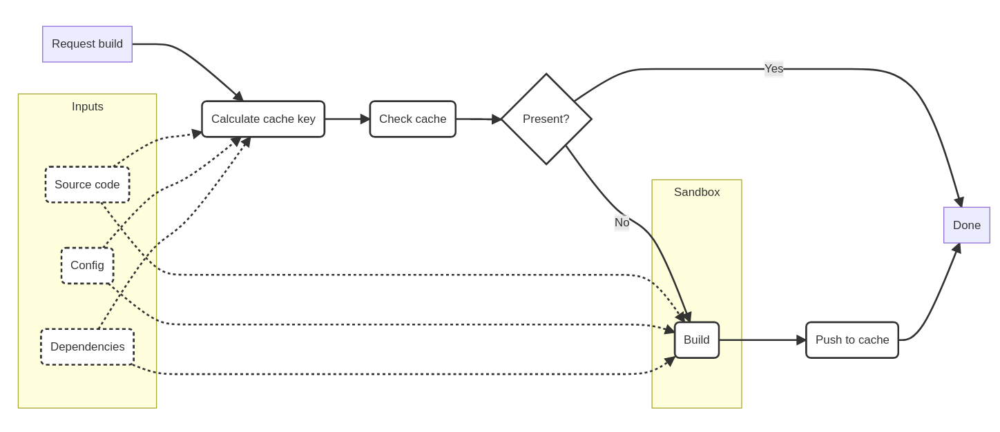
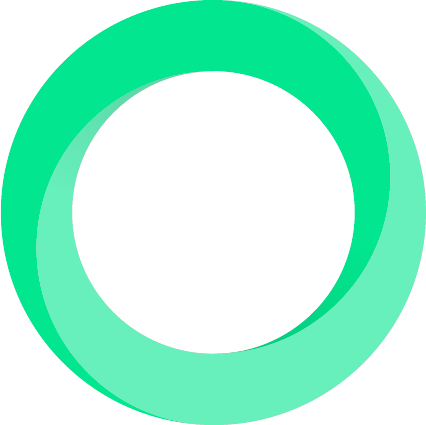

Integrating Software Stacks
With BuildStream 2.0 and the Remote Execution APISam Thursfield
OSSEU 2022
The basic problem
Compiling source code to binaries

A brief history of integration tools
In the beginning was: Make
| Compiler | Make | |
|---|---|---|
| Dependency tracking | None | File level |
| Compiler | Make | |
|---|---|---|
| Dependency tracking | None | File level |
| Multiple repos | No | No |
| Repeatable builds | No | No |
A brief history of integration tools
Then came the packaging tools...
| Compiler | Make | Packaging tools | |
|---|---|---|---|
| Dependency tracking | None | File-level | Package-level |
| Multiple repos | No | No | Yes |
| Repeatable builds | No | No | Mostly |
A brief history of integration tools
- Meta-build tools (Buildroot, BuildStream, Yocto)
- Containers (Docker, Podman, Flatpak)
- Continuous integration
- and more...
| Compiler | Build tools | Integration tools | |
|---|---|---|---|
| Dependency tracking | None | File-level | Package-level |
| Multiple repos | No | No | Yes |
| Repeatable builds | No | No | Mostly |
Integrating at scale in 2022
One tool to "rule them all" ...?
One tool to "rule them all" ...?
Integrating at scale in 2022
Make each program do one thing well.
How can our integration tools work together?
The Remote Execution API
Introduced in 2017, by team at Google working on Bazel.
Designed around:
- Content addressable storage for directories and files
- An execution request interface
- A result cache
Building blocks for any integration pipeline you can think of.
The Remote Execution API
Traditional build tools
The Remote Execution API
Content-addressed caching
For cache to be trusted and shared, cache key must capture all factors that can affect build output.
The cache and the builder can be local, or remote.
The Remote Execution API
REAPI clients
All these tools support remote caching and distributed builds via the Remote Execution API.
| Name | Dependency tracking | Repeatable builds | Multiple repos | ||
|---|---|---|---|---|---|
| Compiler tools | Goma Server | - | - | - | |
| Recc | - | - | - | ||
| Build tools | Bazel | File-level | Partly1 | Partly | |
| Pants | File-level | Partly1 | No | ||
 |
Please | File-level | Yes | No | |
| Integration tools | BuildStream | Element-level | Yes | Yes |
Compiler tools: replacements for ccache + distcc.
Build tools: replacements for Make
1. Bazel and Pants sandboxing doesn't hide host environment in any way.
Integration tools: designed for integrating multiple components, such as packages.
Things to be aware of
- Bazel isn't magic
- Adapting an existing project to Bazel means rewriting its entire build system
- Requires a BUILD file for each 3rd party dependency
- Sandbox can be leaky.
- Hard to extend beyond built-in languages, no plugin mechanism
- Hard to land changes upstream
- CLI is not pleasant to use
- BuildStream isn't magic
- Designed more for integrators and less for developers
- If making frequent changes to slow-to-build elements, be prepared to wait
- Sandboxing helps ensure repeatable builds, but nothing is foolproof
REAPI infrastructure
| Name | Language | Storage | Execution | |
|---|---|---|---|---|
| Bazel Buildfarm | Java | disk, S3, shard, ... | local | |
| BuildBarn | Go | disk, S3, shard | local | |
| BuildGrid | Python/C++ | disk, Redis, S3, shard, ... | local, bwrap, OCI, ... | |
| Please-servers | Go | Google Cloud Services | local | |
| Scoot | Go | - | local |
I recommend BuildBarn or BuildGrid for use with BuildStream
Things to be aware of
- Protobufs might make you sad
- Pin "known-good" versions to avoid segfaults
- Public code, private development
- Infrastructure experts required
- BuildBarn, Buildfarm and BuildGrid all require some work to deploy
- Cache expiry
- For best results, use the cache as a cache
REAPI wishlist
Clients:
- More build tools supporting REAPI
- sccache (link)
- Distro packaging tools
- Improve BuildStream experience for developers
- Faster rebuilds, perhaps with Recc inside Bst
Infrastructure:
- Wider support
- Artifactory supporting REAPI caching (issue)
- Easier deployment and management
- Better documentation
Find out more about the REAPI: https://github.com/bazelbuild/remote-apis
BuildStream
- Integration tool comparable to Buildroot or BitBake
- Open source, Apache Foundation project
- Designed around strong caching
- Control all inputs to build process and sandbox build process
- Version 2.0 (releasing this month) designed around REAPI
BuildStream - example project
elements/base.bst
kind: import
description: |
Alpine Linux base runtime
sources:
- kind: tar
# This is a post doctored, trimmed down system image
# of the Alpine linux distribution.
#
url: alpine:integration-tests-base.v1.x86_64.tar.xz
ref: 3eb559250ba82b64a68d86d0636a6b127aa5f6d25d3601a79f79214dc9703639
elements/hello.bst
kind: autotools
description: |
Hello world example from automake
variables:
# The hello world example lives in the doc/amhello folder.
#
# Set the %{command-subdir} variable to that location
# and just have the autotools element run its commands there.
#
command-subdir: doc/amhello
sources:
- kind: tar
url: gnu:automake-1.16.tar.gz
ref: 80da43bb5665596ee389e6d8b64b4f122ea4b92a685b1dbd813cd1f0e0c2d83f
depends:
- base.bst
https://github.com/apache/buildstream/tree/master/doc/examples/autotools
BuildStream - example project
# Unique project name
name: autotools
# Minimum required BuildStream version
min-version: 2.0
# Subdirectory where elements are stored
element-path: elements
# Define some aliases for the tarballs we download
aliases:
alpine: https://bst-integration-test-images.ams3.cdn.digitaloceanspaces.com/
gnu: http://ftpmirror.gnu.org/gnu/automake/
plugins:
- origin: pip
package-name: buildstream-plugins
elements:
- autotools
https://github.com/apache/buildstream/tree/master/doc/examples/autotools
Case Study 1
Freedesktop SDK and Runtime
Case study: Freedesktop SDK
- Stable base runtime for most Flatpak apps.
- Integrates > 600 open source components across 4 architectures with BuildStream.
- Largely volunteer-powered.
- Driven by Gitlab CI
Case study: Freedesktop SDK
Benefit from using BuildStream and REAPI:
- Shared cache server provided by BuildBox (BuildGrid)
- CI pushes all built elements to shared cache
- "Full rebuild" is almost never necessary
- Component updates automated
- Downstream projects benefit from upstream cache
Case Study 2
Building for safety with DCSImage: Jason Armstrong, used under CC BY-NC-SA license
Case study: DCS
DCS = "Deterministic Construction Service"
Qualified tool integration for building complex software (e.g. Linux-based operating systems) for safety-critical systems
A design pattern for safely building software.
Repeatable builds are safe builds:
- Re-run of DCS process reproduces exactly the same binary fileset
- Reproducibility is shown to be independent of the specific instantiation of DCS
Allows us to:
- Upgrade or modify tools used to construct safety-critical software and verify that these changes have no impact on the output binaries
- Perform fine-grained impact analysis on the constructed software when updating source and dependencies
Reference implementation uses BuildStream.
Case study: DCS
Qualified using ISO 26262 safety standard.
More information about safe software:
- see Paul Albertella speak on Friday, 11.45
- get involved in ELISA
Happy integrating
Please invest in your build + integration pipelines, and...
Check out BuildStream 2.0 at https://buildstream.build
Sam Thursfield
OSSEU 2022